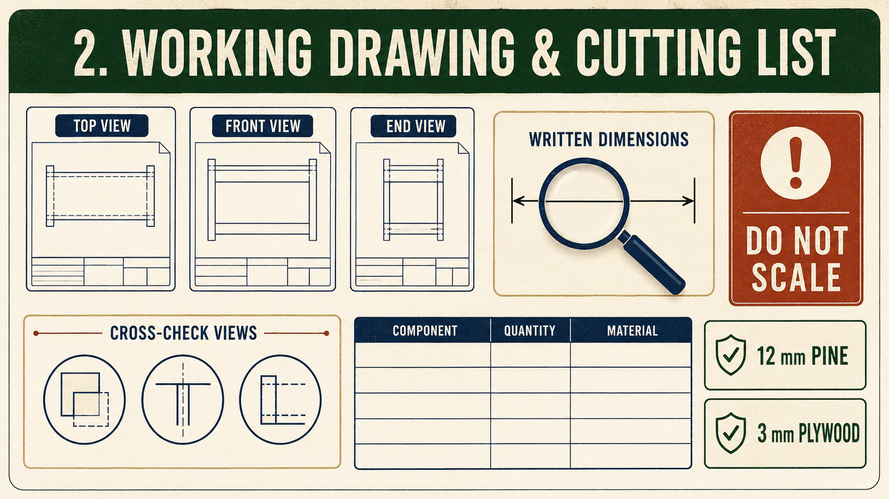

Weeks 1-2
This module
Understand the Carry-All brief, read the supplied working drawing and manage risk before material is removed.
Your work
Student details
Your entries save automatically in this browser. Use Print / Save PDF before leaving the page.
Theory 1
Understanding the Carry-All brief and success criteria

The Barbecue Carry-All brief asks you to manufacture a practical timber tray or carry-all that is strong, accurate, safe to use and finished to an appropriate standard. The supplied working drawing and your teacher’s directions are the main sources of truth. They control the shape, parts, materials, joints and construction requirements. The drawing identifies 12 mm pine for the timber components and a 3 mm plywood base. You must read the written information carefully, use the stated specifications and never scale the drawing or invent missing details.
The documented project includes sides, a bottom, a central handle or handle panel, dividers, a 5 mm rebate butt joint at the corner and 5 mm housings where shown. Box-pin and dovetail joints may be studied later as comparative knowledge, but they are not the assessed Carry-All joints and must not be marked or cut on project stock. The required parts must work together as one complete product. Good manufacture is not simply making the pieces look roughly correct. The sides must align, the rebate-and-housing construction must fit appropriately, the base and dividers must be located as shown, and the handle must form a useful and secure part of the Carry-All. Any practical decision involving tools, processes or local workshop methods must follow teacher direction and the relevant school SOP.
Success also depends on how you manage the construction process. Before adhesive is applied, a dry assembly allows you to check fit, alignment, orientation and whether all required parts are present. Problems found at this stage are usually easier to correct than problems discovered after clamping. During adhesive application and clamping, the aim is to maintain the approved arrangement without introducing twist, movement or damage. Surface preparation and the approved finish should then improve the appearance and usability of the completed product without hiding poor workmanship.
- Check each part against the working drawing before moving on.
- Confirm the rebate butt joint, housings, base and dividers during dry assembly.
- Use the SWMS, teacher directions and school SOPs throughout practical work.
- Record useful process evidence, including decisions, checks and corrections.
- Evaluate the final Carry-All against the brief rather than judging it only by appearance.
Practical quality and folio evidence work together. A well-made Carry-All shows what you achieved, while your process evidence explains how you achieved it. Photographs, brief captions, planning records, safety documentation and quality checks should show the sequence of manufacture honestly. Evidence is strongest when it identifies the stage, the check made, any problem found and the action taken. A collection of unexplained photographs is weaker because it does not show your reasoning or understanding.
Success should be checked progressively, not only at the end. At each stage, compare the work with the drawing, approved instructions and the purpose of the product. Stop and seek guidance when something does not match. Final evaluation should consider accuracy, joint quality, assembly, surface preparation, finish, safe work, function and the completeness of your evidence.
Theory 2
Reading the Carry-All working drawing without scaling

The Carry-All working drawing is the main graphical instruction for manufacture. It communicates the shape, arrangement and relationship of the sides, bottom, central handle or handle panel, dividers, joints, rebates and housings. The drawing must be read together with teacher directions because local workshop procedures, approved tools and safe methods are controlled by your teacher, the SWMS and the relevant school SOPs. When a detail is unclear, you must ask rather than guess or invent a specification.
Orthographic views show the Carry-All from separate, straight-on directions, such as the front, side or top. Each view provides different information. One view may clearly show the overall length, while another may better explain the handle opening, divider position or the relationship between the base and sides. A pictorial view shows the product in a more three-dimensional way. It helps you visualise how the completed Carry-All should look, but it may not communicate every construction detail as accurately as the orthographic views.
Written dimensions always take priority over the apparent size of a line on the page or screen. The drawing specifies a 400 mm overall length and a 178 mm handle opening. It also identifies 12 mm pine for the timber components, a 3 mm plywood base and 5 mm rebates or housings where these are explicitly shown. Dimension lines usually carry the measurement, while extension lines project from the feature being measured. Read where these lines begin and end so you know exactly which edges, openings or features the written value describes.
- Locate the written dimension before deciding what is being measured.
- Trace the extension lines back to the correct edges or features.
- Cross-check the same component in another orthographic view.
- Use the pictorial view to confirm orientation and overall arrangement.
- Ask your teacher when a detail is missing, unclear or appears inconsistent.
Cross-checking views prevents common reading errors. For example, a line that appears to be an outside edge in one view may represent a housing, rebate or hidden feature when examined in another. Check the part’s length, thickness, position and orientation across all relevant views before marking timber. This is especially important for the handle panel, dividers, base and corner-joint details because their correct relationship affects both assembly and function.
You must never scale the drawing by measuring a printed or on-screen line with a ruler and treating that result as a manufacturing dimension. Printing, photocopying, screen zoom and page formatting can change the apparent size of the drawing. Scaling can therefore produce inaccurate parts even when your ruler reading seems careful. Use only written specifications and approved teacher clarification. Recording these checks in your folio demonstrates that your work was planned from reliable information rather than visual guesswork.
Theory 3
Managing Carry-All hazards, risks and the SWMS

Safe work begins by understanding three connected terms: hazard, risk and control. A hazard is something with the potential to cause harm, such as sharp edges, dust, moving equipment, unstable workpieces, adhesive or finishing products. Risk is the chance that the hazard will cause harm and how serious that harm could be. A control is an action or system used to remove the hazard or reduce the risk. Identifying a hazard is not enough; you must also judge the risk and apply suitable controls before work begins.
The hierarchy of controls helps you choose stronger safety measures instead of relying only on personal protective equipment. The preferred response is to eliminate the hazard where possible. If it cannot be eliminated, the next options are substitution, isolation and engineering controls. Administrative controls include teacher instructions, restricted work areas, training, signs, the SWMS and school SOPs. Personal protective equipment is important, but it is the final level of protection and must be used with stronger controls rather than replacing them.
- Eliminate: remove unnecessary hazards, clutter or damaged materials from the task.
- Substitute: use a safer teacher-approved product or process where directed.
- Isolate or engineer: use approved barriers, guards, supports or dust controls.
- Administer: follow the SWMS, demonstrations, SOPs and teacher supervision.
- Protect: wear the required PPE correctly for the identified task.
A Safe Work Method Statement, or SWMS, connects these controls to the actual Carry-All construction sequence. It should not be treated as a generic form completed once and forgotten. A useful SWMS identifies the stage of work, the hazards present, the level of risk, the required controls and who is responsible for following them. Different stages may involve different hazards, including material preparation, forming joints and rebates or housings, dry assembly, adhesive and clamping, surface preparation, applying the approved finish and cleaning the work area.
Before each stage, review the relevant SWMS information and compare it with the work you are about to perform. Check that the area is prepared, the material is sound, required controls are available and the approved process is understood. Teacher-approved tools, products, SOPs and local procedures control all practical work. If the conditions change, equipment appears damaged, a workpiece becomes unstable or the method is unclear, stop and report the issue. Do not continue simply because the task has already started.
Safety evidence should show that risk management influenced your decisions. A photograph, caption or brief record can identify the construction stage, the hazard recognised and the controls used. This demonstrates more understanding than merely stating that you “worked safely”. Progressive safety checks protect people, reduce damage and support accurate manufacture throughout the Carry-All project.
Guided practice
Weeks 1-2 knowledge checks
Choose an answer, check it and use the progressive hints and feedback to improve.
Apply your learning
Scaffolded written responses
Write first, use the feedback prompts, then compare your reasoning with the appropriate response example.
Finish the two-week block
Save your evidence
Your work saves in this browser, but browser storage is not the official submission. Save the completed page as a PDF before changing devices or clearing browser data.
No marks, answers or personal information are sent from this webpage.